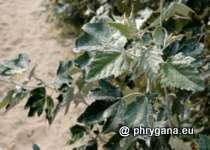

")
| Phrygana: la Nature en Crète principalement, mais aussi d'ailleurs ... |
|  |
|
|
| Populus alba | Acrostichum aureum | Chorthippus biguttulus |
| Espèces: 1449--- Faune: 563 -- Flora: 860 -- Galles (Bacteria): 2 -- Champignons: 23 -- Lichens: 1 | |||||
| Nouveautés | |||||
| Fauna: | Grallina cyanoleuca | Fauna: | Threskiornis molucca | Flora: | Furcraea foetida |
| Fauna: | Vanellus miles | Flora: | Asystasia gangetica | Flora: | Passiflora vitifolia |
| Flora: | Talinum fruticosum | Flora: | Salix alba | Flora: | Bismarckia nobilis |
| 28 octobre 2023 |